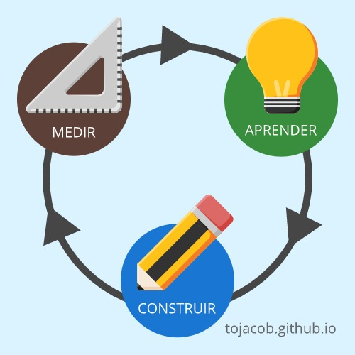

Que es Lean Startup y porque deberías utilizarlo
Por Jacob Samuel G.
Mi objetivo en este artículo es ayudarte a entender las bases de Lean Startup y su utilidad para tus proyectos.
Si al terminar de leer descubres que esta metodología puede servirte, entonces deberás aprender más por tu cuenta. Existen libros muy buenos sobre el tema, al final del post dejare los enlaces de algunos que recomiendo.
Tradicionalmente
Cuando un emprendedor quiere hacer realidad una idea, los pasos básicos para llevarla a cabo son bien conocidos. Primero, el emprendedor realiza su respectivo estudio de mercado, después, crea su plan de negocio, consigue financiamiento, comienza a desarrollar el producto y finalmente lo lanza al mercado.
A grandes rasgos, así funciona el proceso tradicional para iniciar un startup. En medio de todo esto, encontramos un problema. El emprendedor no sabe si su idea tendrá éxito o si fracasara, el no puede predecirlo, lo sabrá hasta que el negocio este en marcha. Si el negocio funciona, que maravilla. Si el negocio fracasa, es una lástima, todo es tiempo, dinero y esfuerzo perdido.
Algunas cosas son seguras: el emprendimiento está lleno de incertidumbre, el mercado es feroz y nuestras ideas pocas veces sobreviven.
El origen
Eric Ries, el autor de la metodología Lean Startup, entendía perfectamente esta situación. El fundo y trabajo en un par de empresas tecnológicas de millones de dólares en Silicon Valley. Empresas que tristemente fracasaron.
Gracias a estos fracasos, Ries puedo observar el problema. Resulta que los emprendedores concentran todo el esfuerzo y dinero en hacer realidad sus ideas. Esto lleva mucho tiempo, y durante este tiempo pocas veces se valora si el producto funcionara en manos del cliente. Al final, cuando el producto está listo, el cliente recibe algo que realmente nunca pidió y, por ende, el proyecto fracasa.
Es un error muy común, pareciera que no afecta a nadie, pero la verdad es que gran parte de los proyectos tecnológicos fracasan por este motivo.
Lean Startup comenzó siendo una tesis, luego se convirtió en un libro y ahora es toda una comunidad global. No en vano, sus enfoques y procedimientos nos ayudan a sobrellevar toda la incertidumbre que acompaña el emprender un nuevo negocio.
Fundamentos
Imagina que pudieras probar si tu idea tendrá éxito sin tener que gastar mucho dinero o tiempo. Si pudieras comenzar rápido y reducir el riesgo del fracaso.
Suena a cuento de hadas ¿verdad? Pero es exactamente lo que Lean Startup te permite hacer, por supuesto, no es fácil, pero si muy divertido.
Lean se basa en el método científico para probar tus ideas, partiendo de la siguiente premisa: “Cada nuevo proyecto es un experimento”.
Lean Startup propone que, en lugar de concentrarse en todas las posibles funcionalidades del producto desde el primer día, debemos interactuar con los clientes para diseñar el producto de manera gradual e iterativa. Necesitamos probar cada una de las partes del producto y comprobar si lo que estamos creando tiene una buena aceptación en el mundo real.
Esto nos ayuda a reducir el tiempo y costo del lanzamiento, nos permite ofrecerle al mercado lo que realmente necesita, no lo que nosotros pensamos que necesita. Ahora no se trata de entregarle al mercado nuestro producto, sino de encontrar junto con el mercado, cual es el producto que nos demanda.
Evidentemente Lean Startup ofrece un conjunto de conceptos, procesos y herramientas para lograr estos objetivos. No es algo fácil, pero como dije anteriormente, para los emprendedores puede ser muy divertido.
Si estas apunto de emprender en el mercado tecnológico o trabajar en un startup, estudiar y entender esta metodología puede ser de gran utilidad para ti, y quien sabe, quizá te ayude a desarrollar mejor tu idea.
Recuerda que las metodologías ágiles son herramientas, debemos elegir sabiamente cual utilizar dependiendo de las necesidades en el proyecto.